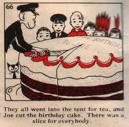
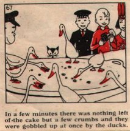

Thursday, March the 11th, 2004
back to: title, date or indexes
Yesterday was the birthday of long-time Hooting Yard reader Chris Atton. To celebrate the event, Dr Ruth Pastry has supplied two more pictures by Neville Main, onlie begetter of Mat and Nat, the ur-Istvan and ur-Zoltan whose cheery countenances were featured yesterday. Today we have a monkey cutting a birthday cake which is gobbled up by ducks—that's something you don't see every day. (The captions suggest that the ducks only got the leftover crumbs, but I doubt it. Have you seen ducks eat?) The pictures are from Jimmy Goes To A Birthday Party (1950).

If you would like your birthday to be celebrated on this site, please write to the address at the top of the page to request an application form. Returned forms will be scrutinised by a panel consisting of a mountebank, a zany, and a distinguished potato scientist (or similar).